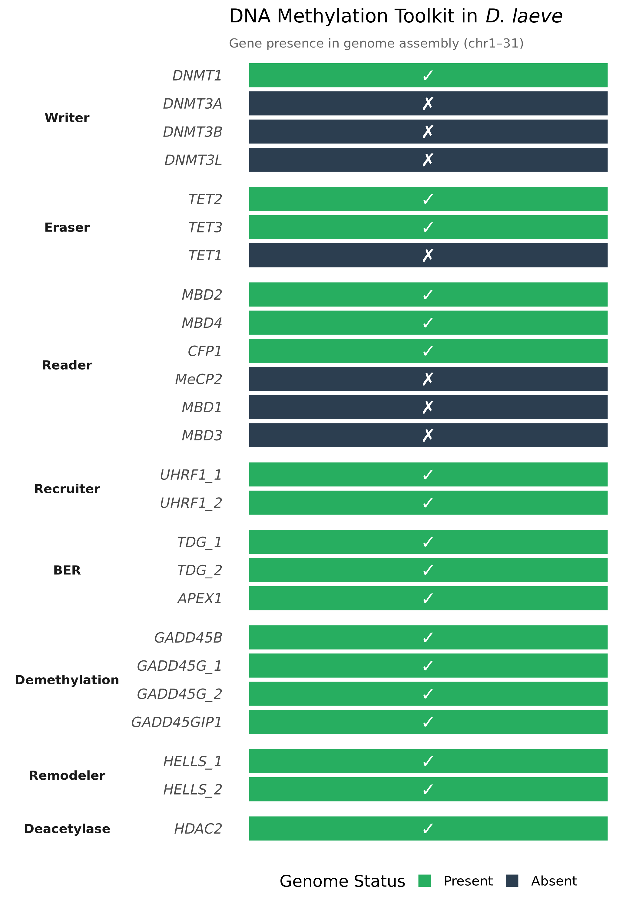
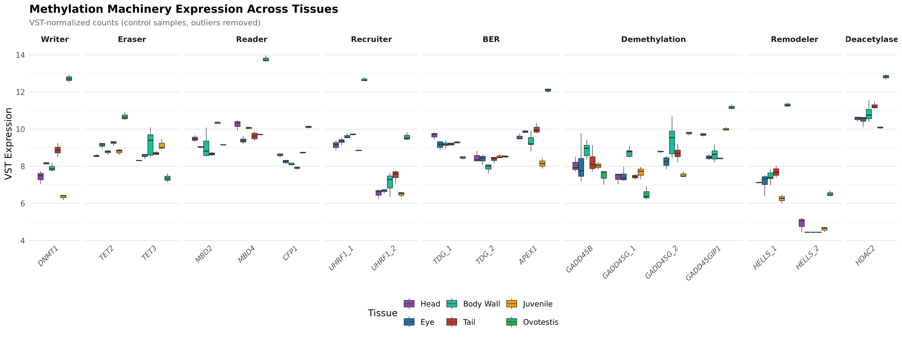
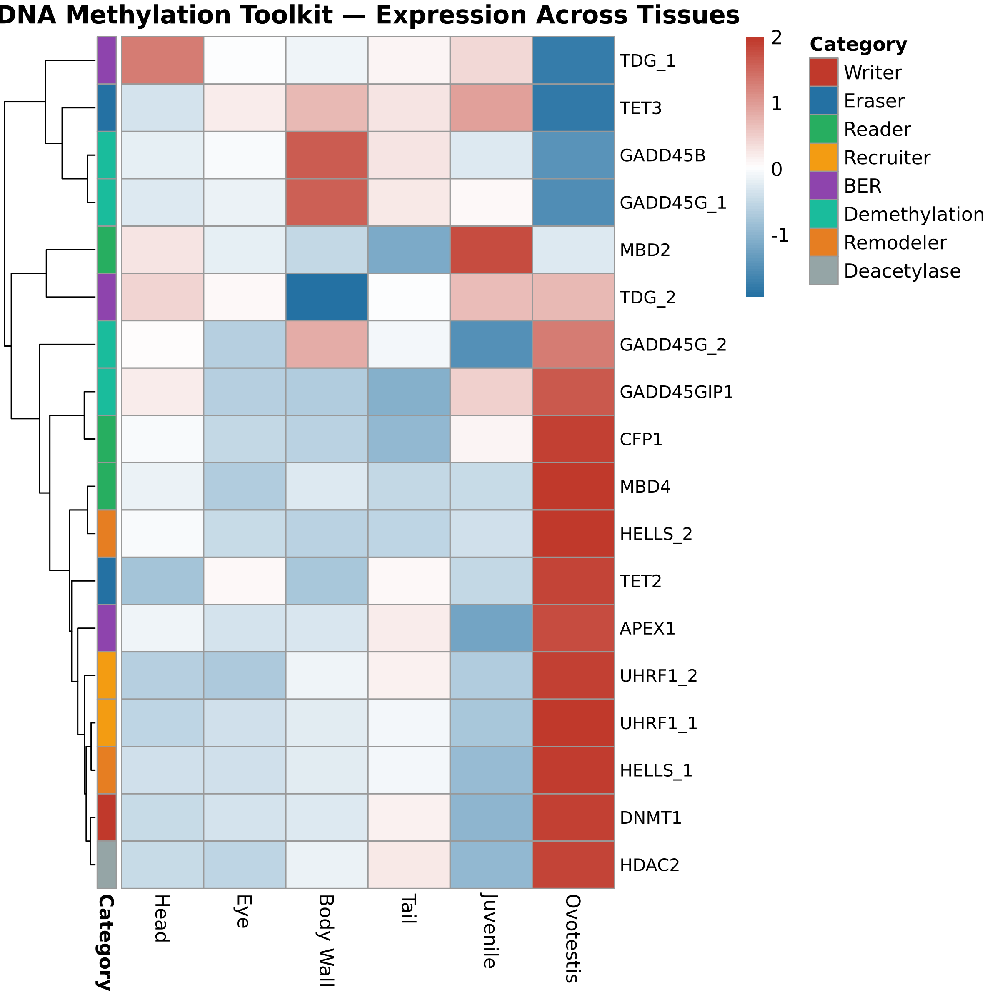

Question: Does D. laeve possess a functional DNA methylation toolkit, and how is it expressed across tissues?
Presence (green) or absence (black) of methylation machinery genes in the D. laeve genome (chr1–31). Notable absences: DNMT3A/B/L (no de novo methyltransferase), TET1, MeCP2, MBD1, MBD3.

VST-normalized expression of 18 methylation machinery genes across 6 tissues (control samples only, IQR outliers removed).

Z-scored VST expression of all 18 methylation machinery genes. Rows clustered by expression similarity, columns ordered anatomically.

| Gene | ID | Category | Head | Eye | Body Wall | Tail | Juvenile | Ovotestis |
|---|---|---|---|---|---|---|---|---|
| DNMT1 | LOC_00009210 | Writer | 7.43 | 7.7 | 7.9 | 8.88 | 6.35 | 12.73 |
| TET2 | LOC_00008803 | Eraser | 8.57 | 9.25 | 8.62 | 9.26 | 8.79 | 10.67 |
| TET3 | LOC_00017436 | Eraser | 8.31 | 8.65 | 8.97 | 8.7 | 9.15 | 7.36 |
| CFP1 | LOC_00024130 | Reader | 8.61 | 8.25 | 8.18 | 7.91 | 8.74 | 10.12 |
| MBD2 | LOC_00005931 | Reader | 9.49 | 9.2 | 9.02 | 8.66 | 10.36 | 9.16 |
| MBD4 | LOC_00023929 | Reader | 10.26 | 9.4 | 10.07 | 9.63 | 9.7 | 13.78 |
| UHRF1_1 | LOC_00011698 | Recruiter | 9.14 | 9.35 | 9.56 | 9.79 | 8.86 | 12.67 |
| UHRF1_2 | LOC_00017302 | Recruiter | 6.54 | 6.43 | 7.13 | 7.5 | 6.5 | 9.58 |
| APEX1 | LOC_00000327 | BER | 9.58 | 9.28 | 9.35 | 10 | 8.15 | 12.09 |
| TDG_1 | LOC_00018573 | BER | 9.66 | 9.15 | 9.11 | 9.2 | 9.3 | 8.46 |
| TDG_2 | LOC_00024530 | BER | 8.47 | 8.39 | 7.95 | 8.38 | 8.53 | 8.53 |
| GADD45B | LOC_00012796 | Demethylation | 8.06 | 8.12 | 8.88 | 8.27 | 8.03 | 7.48 |
| GADD45G_1 | LOC_00002628 | Demethylation | 7.39 | 7.48 | 8.73 | 7.78 | 7.67 | 6.5 |
| GADD45G_2 | LOC_00012923 | Demethylation | 8.79 | 8.23 | 9.4 | 8.7 | 7.54 | 9.78 |
| GADD45GIP1 | LOC_00002413 | Demethylation | 9.71 | 8.85 | 8.83 | 8.42 | 10 | 11.19 |
| HELLS_1 | LOC_00010497 | Remodeler | 7.13 | 7.14 | 7.43 | 7.7 | 6.25 | 11.31 |
| HELLS_2 | LOC_00013941 | Remodeler | 4.91 | 4.56 | 4.48 | 4.49 | 4.62 | 6.53 |
| HDAC2 | LOC_00003192 | Deacetylase | 10.57 | 10.48 | 10.86 | 11.25 | 10.08 | 12.82 |